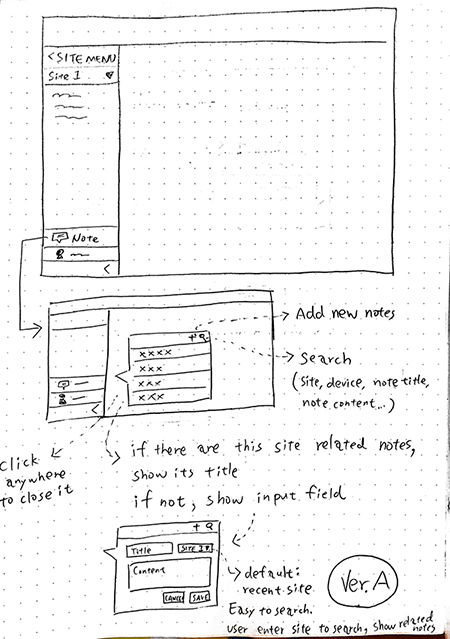
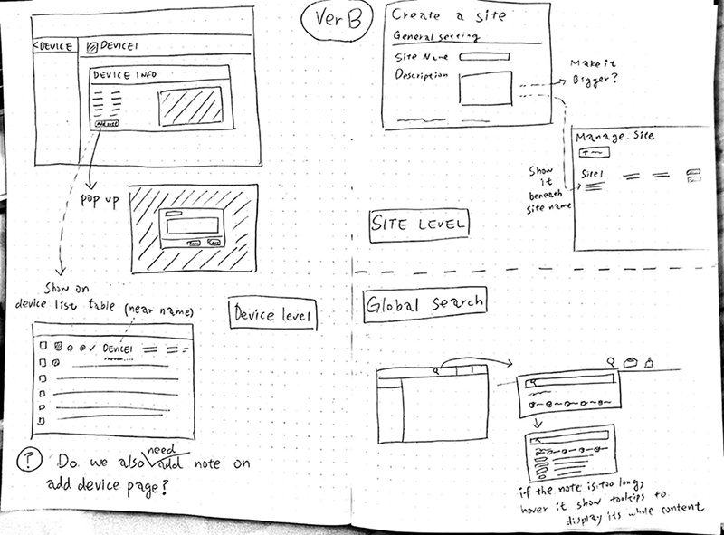
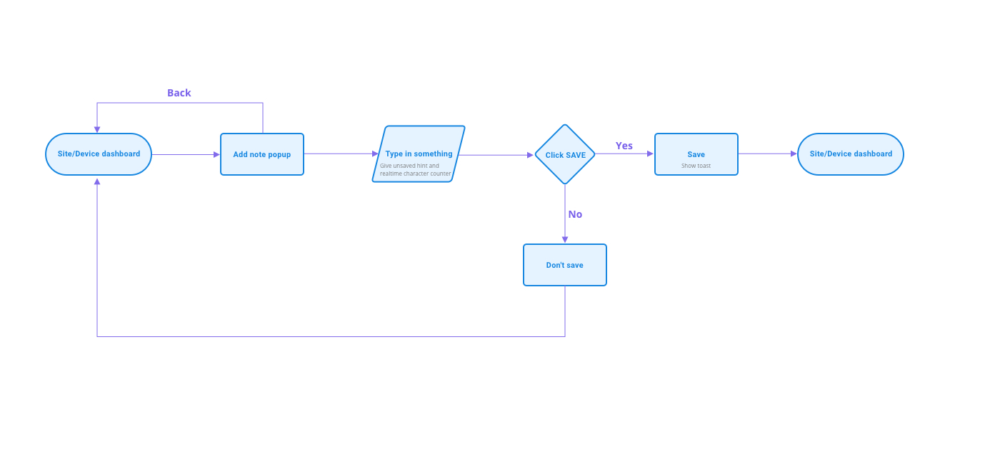
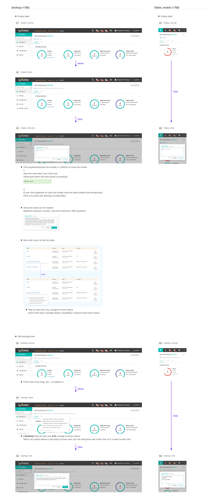

IgniteNet Web Application
UI / UX Design
IgniteNet’s Cloud Controller is for remote management, monitoring and trouble-shooting of multiple networks at a time.
My Role
- Collaborate with product owner to confirm requests, define problem statements.
- Run usability test to make sure the working flows are institute.
- Design the UI which are clean and beautiful.
- Interview users to learn their pain points, discuss with team members to itergrate the potential opportunities into product roadmap, help create features that address users’ needs.
- Lead design team to defining design language, create design guideline which helps team members work efficiently.
- 2019
- Sketch, Marvel, Zeplin
New feature: Allow user to add notes
- Request
These would allow users to add notes to their devices and sites about which customer is connected, and other useful stuff. This was requested by a customer.
- Highlight
- Interview users to learn the user scenario
- Design a simple way for user to add note quickly and for developers, it doesn't take much effort to deployment.
- Process
1. Empathize with the users and define the problem and goal
Talk to users to learn their scenarios. Discuss with PO to confirm the scenarios and the feature goal "Allow user to note everything important quickly".

2. Design Metric
- Consistency and standards
- Recognition rather than recall
- User control and freedom
- Visibility of system status
3. Explore
Define Scenario
This is a new feature which there are many possible scenarios and maybe some scenarios we didn't know. It's hard to design for all scenarios. Discuss with team members and decided to design for the scenarios we know.
- Scenario 1: User Jonathen added a device which is named 2F-15 in Taipei 101, he wrote down the device location since he doesn’t have the Taipei 101 building map, and there are 15 devices installed in 2F. One day Jonathen found out that device 2F-15 was offline, so he decided to go to Taipei 101 to check the device. He used the note to know where the device was and found it quickly.
- Scenario 2: Jonathen installed a ignitenet device in Taipei 101 2F, because of some security reasons, he didn't registered it in cloud. He checked the vlan ID (he already had a vlan, he wanted to involve this device in). After installing it, He added a note about the device vlan ID and IP address in Taipei 101 site. Taipei 101 manager said internet in some places are not stable, Jonathen know the internet in that area is connecting by the not registered device. Then he went to Taipei 101, checked the note and know its vlan Id and IP address, then he local logged in to see what happen.
- Idea A: User can enter everything at the same place. The reason why note is on left menu is because it might be used to note installation info, it'd be better that while user do config task, he/she can still see these note without going to other page

- Idea B: There is a small button/text link at Site/Device info bottom, click it will show pop up. This note can be shown on device list table, beneath device name. Or expand the row to see its note.

4. Decision
Because it's a new feature, and the scenario is uncertain. The goal is to deliver MVP, not to cost much time and effort, as it implemented, gather user's feedback to iterate it. Therefore based on the idea B to design.
- Design
- Use the existing components and patterns
- Run usability test to make the design decisiion
- Polish design


- If you are interested in the other features I designed please feel free to contact me :)